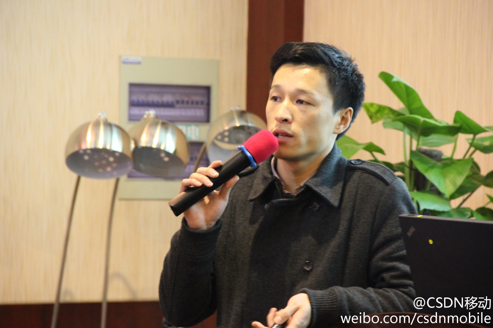

何萌在活动中回答一大学生的提问时说，心态要好，要相信世界是公平的，即使周围有官二代，富二代，那是因为他们的老爸比你的老爸更努力的缘故。@MullHe@CSDN移动:#创翼全国 六城联动#武汉站，前多普达及HTC增值事业部产品总监何萌认为跟风的后进创业者和追高的股民一样，面临的风险较大。只有很早开始就长期站在那里、坚持在那里，有积累的有筹码者，才能等到和赢得风水（行业浪潮）转到自己这波或这领域的最大回报。 